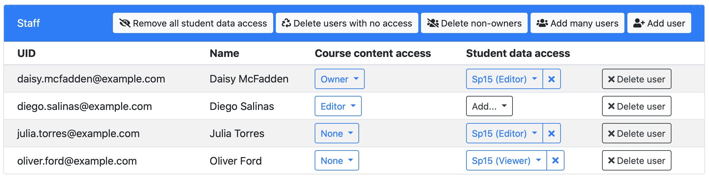
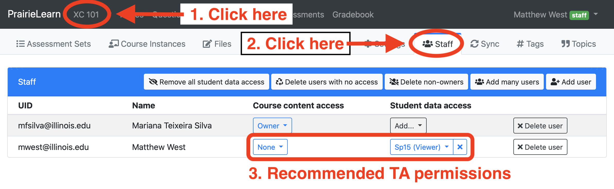

Tim Bretl has completely restructured the way that course staff permissions work in PrairieLearn. The new permissions are much simpler to use and provide more fine-grained control over who can access student data. Student access control has not been changed in any way.
To use the new permissions, click on your course number in the top menubar (e.g., "XC 101") and then click on the "Staff" tab. Your existing permissions for Instructors have been automatically migrated to the new system, so you will see something like this:
TA permissions were not automatically migrated to the new system because there is not an exactly equivalent set of new permissions. To restore access for TAs, the recommended approach is for the course owner to do:
The new permissions separate out access to course content (questions, assessments, etc) from access to student data. The new course content access levels are:
| Course content access | |||||
|---|---|---|---|---|---|
| Action | None | Previewer | Viewer | Editor | Owner |
| View questions and assessments | · | ✓ | ✓ | ✓ | ✓ |
| View issues | · | ✓ | ✓ | ✓ | ✓ |
| View aggregate statistics in all course instances | · | ✓ | ✓ | ✓ | ✓ |
| View question code and JSON files | · | · | ✓ | ✓ | ✓ |
| Close issues | · | · | · | ✓ | ✓ |
| Edit question code and JSON files | · | · | · | ✓ | ✓ |
| Sync from GitHub | · | · | · | ✓ | ✓ |
| Edit course staff permissions | · | · | · | · | ✓ |
Student data access permissions apply for individual course instances, so instructors and TAs can be given access to student data in Fall semester but not Spring semester, for example. These permissions can be mixed and matched with the above course content permissions, so you can separately control access to course content from access to student data. The new student data permissions are:
| Student data access | |||||
|---|---|---|---|---|---|
| Action | None | Viewer | Editor | ||
| View individual student scores | · | ✓ | ✓ | ||
| Download gradebook data | · | ✓ | ✓ | ||
| Manually grade student submissions | · | · | ✓ | ||
| Edit individual student scores | · | · | ✓ | ||
| Change time limits and close assessments | · | · | ✓ | ||
While every course should use the different permissions in way that best suits the course needs, some recommended guidelines are:
| Role | Course content access | Student data access |
|---|---|---|
| Instructor | Course content owner | Student data editor |
| TAs developing course content | Course content editor | Student data editor |
| Student content developers (not TAs) | Course content editor | None |
| TAs involved in grading | None | Student data editor |
| Other TAs | None | Student data viewer |
| Instructors from other classes | Course content viewer | None |
The new course staff permissions are managed entirely on the "Staff" tab and any Instructor or TA access rules in JSON files are ignored. You will receive warning messages about existing Instructor/TA access rules, like this:
To fix these warnings you should delete any Instructor or TA access rules in
infoAssessment.json or infoCourseInstance.json:
"allowAccess": [
...
{ # should be deleted
"role": "TA", # should be deleted
}, # should be deleted
...
],
The userRoles property should also be deleted in
infoCourseInstance.json:
"userRoles": { # should be deleted
"mfsilva@illinois.edu": "Instructor", # should be deleted
"mwest@illinois.edu": "TA" # should be deleted
}, # should be deleted
See the documentation for more information.